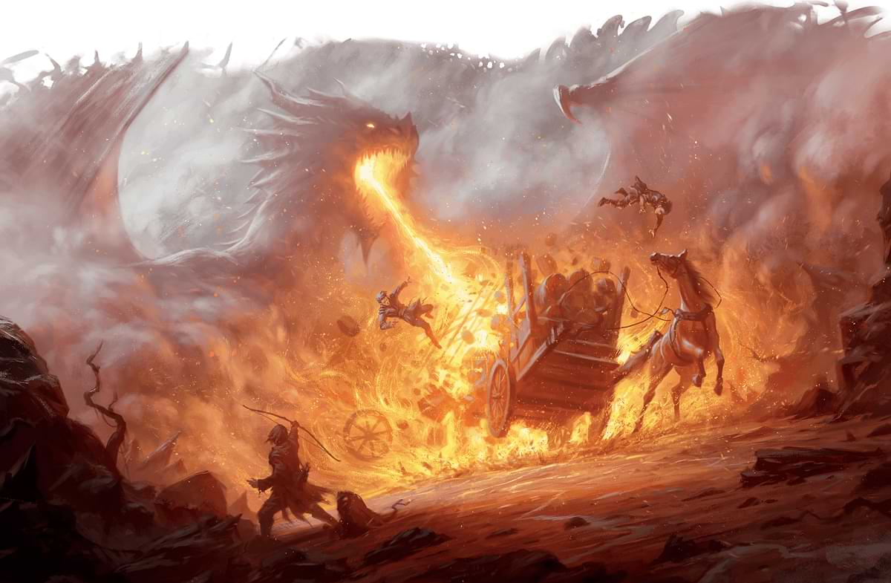
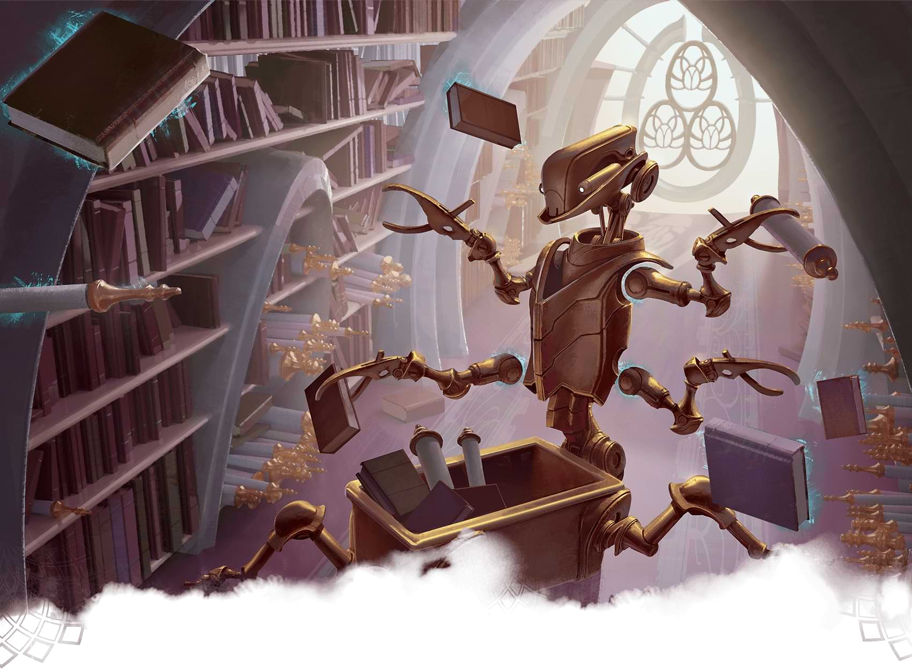

What Is a One-Shot?

Tips for Running One-Shots

Our Favorite One-Shots
Mike Bernier (@arcane_eye) is the founder of
Arcane Eye, a site focused on providing useful tips
and tricks to all those involved in the world of D&D. Outside of
writing for Arcane Eye, Mike spends most of his time playing
games, hiking with his girlfriend, and tending the veritable
jungle of houseplants that have invaded his house.